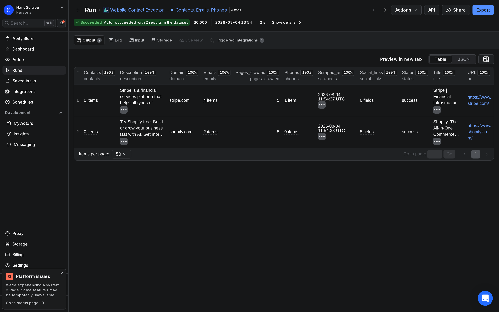
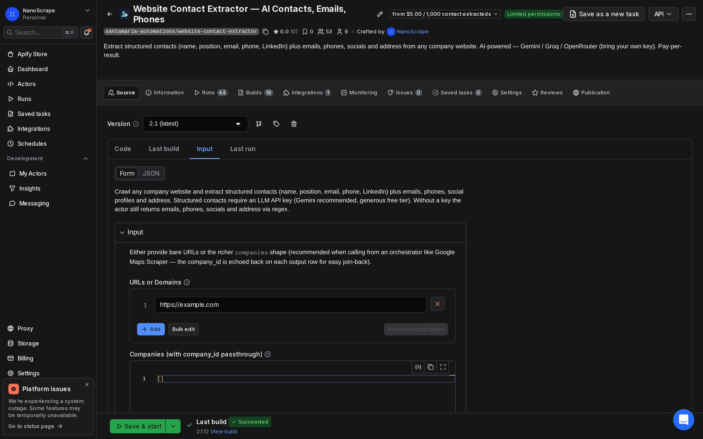
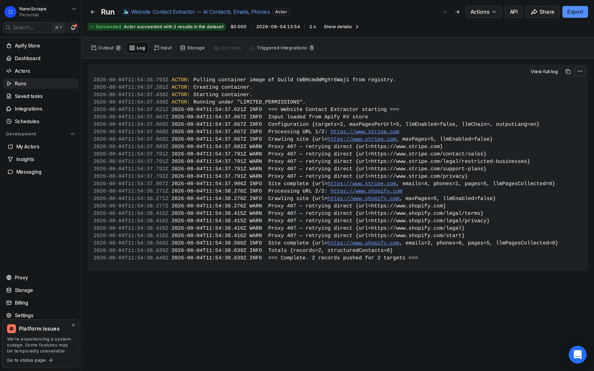

How to Extract Emails and Contacts from Company Websites in Bulk
Tracking down a contact email for each company on a prospect list is slow work: open the site, click Contact or About, scroll, copy, switch tabs, repeat. The NanoScrape Website Contact Extractor automates that loop. Give it a list of domains or URLs and it visits each site, prioritizes contact and about pages, pulls every email address, phone number, and social profile it finds, then returns one clean record per site. A hundred companies costs about a dollar and finishes in a few minutes.

In this tutorial
What you get
The NanoScrape Website Contact Extractor crawls each URL you provide, visits contact and about pages first, and returns one record per site containing:
- Email addresses pulled from page text and
mailto:links - Phone numbers from
tel:links and international-format text (e.g., +44 20 1234 5678) - Social media profiles: LinkedIn, Twitter/X, Facebook, Instagram, YouTube, Xing
- Company address when the site includes schema.org JSON-LD structured data
- Page title and meta description for context
- Pages crawled count so you know how deeply the crawler went
Everything is consolidated into a single row per website, so the output drops straight into a spreadsheet or CRM without extra cleanup.
Use cases
- B2B outreach: you have a list of target companies from a directory scrape or CSV export and need a contact email for each one before reaching out
- Lead enrichment: append contact details to an existing CRM export so your sales team has direct emails rather than generic contact forms
- Supplier vetting: collect phone numbers and addresses for a shortlist of vendors before getting on a call
- Competitive intelligence: map social presence and PR contacts for competitors in your space
- Partnership outreach: find the right email at partner companies without paying for a data provider
Prerequisites
- A free Apify account. New accounts get $5 of free credit, which covers several hundred company websites.
- A list of company website URLs or domain names you want to enrich.
Step 1: Open the actor on Apify
Go to the Website Contact Extractor actor page on Apify. Click Try for free to open the input form. If this is your first time on Apify, you will create a free account before landing on the input screen.
Step 2: Enter your URLs
In the URLs or Domains field, paste your list of company websites. Both bare domains and full URLs are accepted:
{
"urls": [
"stripe.com",
"https://www.shopify.com",
"https://mailchimp.com/contact"
],
"maxPagesPerUrl": 15
}Leave Max Pages Per URL at the default of 15 for most cases. This covers the homepage plus contact, about, team, and impressum pages for the vast majority of small and mid-size business sites. Raise it to 30 or 50 for large corporate sites where contact information may be buried deeper.

Step 3: Start the run
Click Start. The actor launches immediately. The run console shows a live log as each site is visited. A typical batch of 10 URLs finishes in about 30 seconds; 100 URLs takes a few minutes. Each site is crawled independently, so the run scales automatically.

Step 4: Export the results
Once the run finishes, open the Dataset tab. You will see one row per website with all contact details consolidated. Click Export to download as CSV, JSON, Excel, or Google Sheets. Here is what a result record looks like:
{
"url": "https://www.stripe.com",
"domain": "stripe.com",
"title": "Stripe | Financial Infrastructure to Grow Your Revenue",
"emails": [
"sales@stripe.com",
"complaints-in@stripe.com",
"dpo@stripe.com",
"privacy@stripe.com"
],
"phones": ["+1 888 926 2289"],
"address": null,
"social_links": {},
"pages_crawled": 5,
"scraped_at": "2026-08-04T11:49:55Z"
}This is a real record from a live run on stripe.com, made while writing this tutorial. Sites that do not expose a contact email will have an empty emails array rather than a placeholder address.
Input options
The actor accepts two input modes:
- URLs mode (
urls): a plain list of website addresses. Best for ad-hoc enrichment runs where you just need contact data and do not need to join it back to a specific record. - Companies mode (
companies): each entry carries acompany_idyou set. That ID is echoed on the output row, letting you join enrichment results back to your CRM or database by ID without relying on domain-name matching.
Companies mode example:
{
"companies": [
{ "company_id": "CRM-00123", "website_url": "https://acme.com" },
{ "company_id": "CRM-00456", "website_url": "https://example.org" }
],
"maxPagesPerUrl": 15
}How the crawler works
For each URL, the actor follows a fixed sequence:
- Visits the homepage and reads the page title and meta description
- Parses schema.org JSON-LD structured data to extract a company address if present
- Discovers internal links, giving priority to contact, about, impressum, team, and privacy pages
- Extracts email addresses from visible text and
mailto:links - Extracts phone numbers from
tel:links and international-format text strings - Collects social media profile URLs: LinkedIn, Twitter/X, Facebook, Instagram, YouTube, Xing
- Returns one consolidated record per website with all data merged
Output field reference
Per-company record
url(string) - The input URL that was crawleddomain(string) - Normalized domain name, e.g. stripe.comtitle(string) - Page title from the homepagedescription(string) - Meta description from the homepageemails(string[]) - All unique email addresses found, lowercased and deduplicatedphones(string[]) - Phone numbers from tel: links and international-format textaddress(string or null) - Company address from schema.org JSON-LD, or null if not presentsocial_links(object) - Social profiles keyed by platform: linkedin, twitter, facebook, instagram, youtube, xingpages_crawled(integer) - Number of pages visited on this sitescraped_at(string) - ISO 8601 timestamp when the record was produced
Companies-mode passthrough
company_id(string) - Your internal identifier, echoed from the input so you can join enrichment results back to your source data
What it costs
The actor uses pay-per-event pricing. Three event types generate charges:
- Actor start: a small flat fee per run, charged once regardless of list size
- Company processed: charged once per website crawled
- Contact extracted: charged per individual contact detail (each email or phone number found)
Current rates are on the actor page (pricing may update over time). A free Apify account includes $5 of credit, covering several hundred company websites before any payment is needed.
Automate with a schedule
To run the extractor automatically on a recurring basis, open the Apify console, navigate to Schedules, and set a CRON interval. A common pattern is to read new company URLs from a Google Sheet each night and write the enriched results back. The Google Sheets integration actor on Apify handles that bridge without any custom code.
FAQ
Does it work on sites with bot protection?
Sites that present a challenge page (Cloudflare, reCAPTCHA) are skipped automatically. The actor moves on to the next URL so the run completes cleanly. The skipped site will still appear in the dataset with empty contact arrays.
How many pages should I crawl per site?
The default of 15 pages covers most small and mid-market business sites. Raise it to 30 or 50 for large corporate sites where the contact page may be many clicks deep, or when you want role-specific email addresses (hr@, press@, legal@) that may appear only on internal pages.
Can I pass my own company IDs through to the output?
Yes. Use the companies input instead of urls and include a company_id on each entry. That ID is echoed back on the output row so you can join the enrichment data to your CRM records without relying on domain-name matching.
Does it find contact forms or only email addresses?
The actor extracts raw email addresses and phone numbers from page text and links, not contact form URLs. If a site hides all contact information behind a form and publishes no mailto: links, the emails array will be empty.
Can I trigger runs from code instead of the UI?
Yes. Use the Apify API or the JavaScript/Python SDK to trigger runs programmatically. The actor ID is JmMPJ7zumUfB7p0Kr. Full API documentation is at docs.apify.com/api/v2.
Is scraping publicly available contact information legal?
The actor only reads publicly accessible pages, the same content anyone can view in a browser. It does not bypass login walls or access private data. That said, how you use scraped contact data for outreach is subject to laws like GDPR, CAN-SPAM, and similar regulations depending on your jurisdiction and the recipients' location. Review the applicable rules before starting an outreach campaign.
Related resources
- Website Contact Extractor actor page: Full specs, pricing tiers, and comparison with alternatives.
- Website Contact Extractor on Apify: Run the actor directly from the Apify console.
- How to scrape business leads from Google Maps: Find businesses by category and location on Maps, then enrich each one with Website Contact Extractor to get direct emails.
- LinkedIn Company Scraper tutorial: Scrape LinkedIn company profiles to build a prospect list, then use Website Contact Extractor to find direct email addresses.